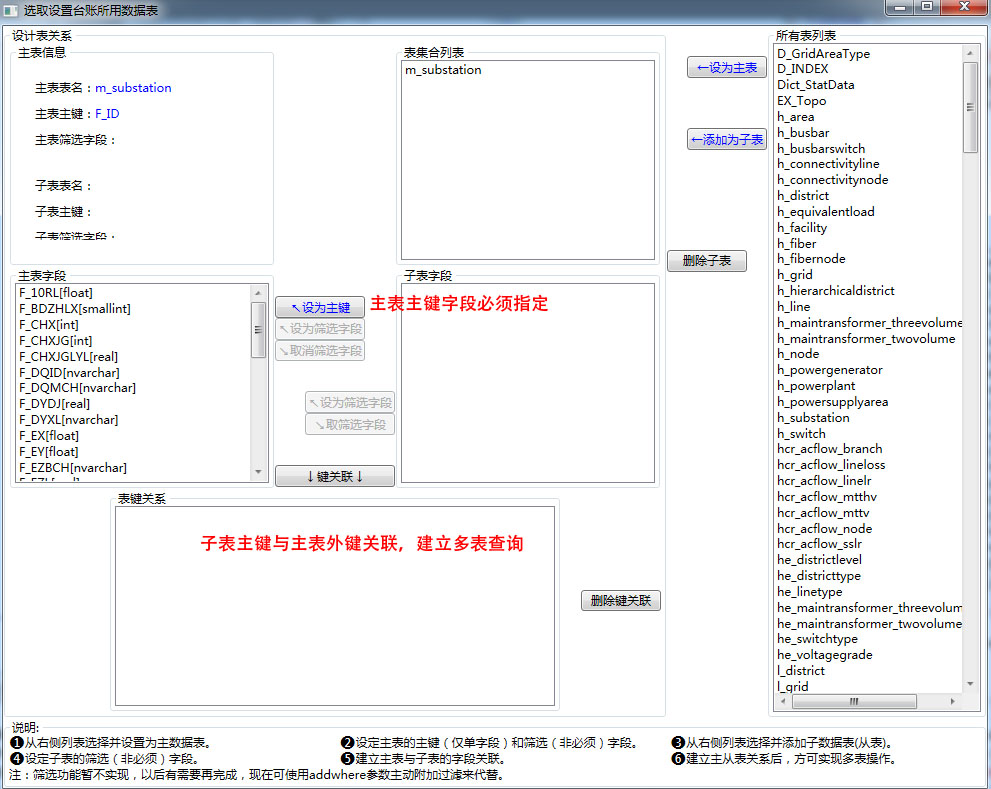
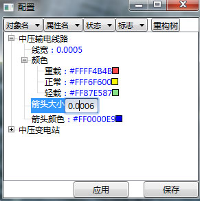
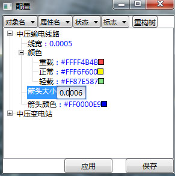

How To Do ?(第二部分)
如何使用数据库配置工具，以实现自动创建和编辑配网对象功能？
数据库配置只要在需要编辑配网对象时才是必需的，但即便是在一般呈现中，使用数据库配置的模式，也可以大幅度缩减代码编写量，减少开发时间。
使用步骤：
1.使用数据库配置工具，建立配网对象与数据表、字段的关联描述，并保存在xml文件中。

注：
①数据描述配置工具的机制是建立配网对象及其ID、坐标、台账、拓扑、运行数据与数据库中数据表字段的对应关系，从而实现自动创建对象和编辑对象后回存数据库。
②要应用数据描述机制来创建和编辑对象，关键属性和台账属性列表是必需的，其它部分不是必需的。
③拓扑数据关联，只有在使用内建拓扑搜索时（供电范围、电源追溯，注：内建拓扑不能应用于动态加载模式），才有必要填写。
④数据描述保存于dbdesc.xml文件中，发布时必须包含它。方法为：在主项目的根中，以内容形式包括这个文件，在发布界面的程序文件中，把这个文件的发布状态从数据文件改为包括。
2.在程序代码中，使用数据库描述来批量创建对象，尤其适用于初始化创建对象时
List<PowerBasicObject> objs = distnet.dbdesc.DictSQLS["中压变电站"].batchCreateDNObjects(distnet); //以中压变电站为键自动批量创建对易用并返回对象列表，注：方法还可附加过滤
foreach (DNSubStation obj in objs) //手动补充必要的其它信息
{
obj.symbolid = ESymbol.中压变电站.ToString(); //更改材质Key
obj.visualMinDistance = visualdistance; //指定最小可视距离
obj.tooltipRightClickTemplate = "AcntTemplate"; //指定右键点击弹出tooltip的模板名
obj.tooltipRightClickContent = obj.busiAccount; //指定右键点击弹出tooltip的内容
//指定使用.x三维模型
(obj as pSymbolObject).XModelKey = "testxmodel";
(obj as pSymbolObject).XMScaleAddition = 0.0100;
(obj as pSymbolObject).isUseXModel = true;
//应用配置工具设置初始的可视化属性
Config.setValue(obj, obj.id, () => obj.color, "中压变电站.颜色");
Config.setValue(obj, obj.id, () => obj.scaleX, "中压变电站.大小");
Config.setValue(obj, obj.id, () => obj.scaleY, "中压变电站.大小");
Config.setValue(obj, obj.id, () => obj.scaleZ, "中压变电站.大小");
}
3.数据库描述也用在编辑回存中，编辑面板位于类库DistNetLibrary.Edit.EditPanel，开发者可直接调用。
如何设置使用动态线宽？
使用动态线宽，可使相机拉近放远时，线的宽度在一定范围内保持不变，避免相机过远时看不见线，过近时线又过粗的情形。
要使用动态线宽，需要进行两部分设置
1.全局设置
//打开动态线宽 earth.dynLineWidthEnable = true; earth.dynLineWidthDefaultDistance = 0.2f; //一般最初可设置为初始时的相机距离，看效果再调整 earth.dynLineWidthMin = 0.0005f;//指动态计算的线宽小于此数时，以此数为线宽，比如相机很近时，动态计算的宽度将极小，这时将使用此数字为线宽，也就是当极近时，线宽看起来还是会加粗 earth.dynLineWidthMax = 0.005f; //指动态计算的线宽大于此数时，以此数为线宽，比如相机很远时，动态计算的宽度将极大，这是将使用此数字为线宽，也就是当极远时，线宽看起来还是会变细，只有在这两者之间时，线可视宽度不变
2.线的设置
line.defaultArrowSize = 0.005f * 1.2f; //此线段潮流箭头的缺省大小 line.defaultThickness = 0.005f; //此线段的缺省宽度 line.dynLineWidthEnable = true; //此线段使用动态线宽
注：在应用程序中，如果使用了动态线宽，则应针对defaultThickness 设置宽度，线段的thickness属性会因为动态线宽被覆盖改写。
如何使用通用配置机制？
通用配置机制代码位于MyBaseControls类库，要使用它必须引用该类库。
通用配置提供两个界面，分别为开发者界面和用户界面。开发者界面用于开发者新增创建配置参数，用户界面用于最终用户修改配置参数。
最终用户修改配置参数，可即时刷新到对象（限于支持通知的属性）。
配置保存于config.xml文件中，发布时必须包含它。方法为：在主项目的根中，以内容形式包括这个文件，在发布界面的程序文件中，把这个文件的发布状态从数据文件改为包括。
1.开发者界面和用户界面
 

2.开发者界面位于MyBaseControls.ConfigTool.UCDeveloperEdit，开发者可在解决方案中新建一外壳应用程序项目，并选择将它编译到主项目的debug/bin中，开发时可以从此目录独立运行该exe文件，不影响主程序编写代码和调试。
3.用户界面位于MyBaseControls.configTool.UCUserEdit, 开发者需自行决定如何将其放入主界面中。
4.代码编写中如何应用配置参数
配置类MyBaseControls.ConfigTool.Config为静态类，方便全局范围使用，使用Config类时，构造函数自动从xml文件装载配置数据。
1）如果要实现用户修改参数后可即时应用至对象，需设置 MyBaseControls.ConfigTool.Config.isMemory = true;
2）使用配置参数设置对象属性时，应使用如下方法
Config.setValue(obj, obj.id, () => obj.color, "中压变电站.颜色"); //lamda表达式写法，提取属性，不易出错且属性名称改变后，编译阶段可检查出 或 Config.setValue(obj, obj.id, "color", "中压变电站.大小"); //字符串写法，开发者自行确保属性名无错
obj为对象，obj.id为对象全局唯一id，color为要设置的属性，"中压变电站.颜色"为配置项键值。
此静态方法通过反射和转换，自动将配置参数的值赋于属性，如果Config.isMemory = true，还会记录下本次操作，以供即时应用用户修改参数刷新对象时使用。
3）调用用户界面代码
void btnconfig_Click(object sender, RoutedEventArgs e) //显示用户界面
{
MyBaseControls.ConfigTool.winUserEdit win = new MyBaseControls.ConfigTool.winUserEdit();
win.refreshObject = refreshconfigobject; //重要，将刷新方法，委托给配置窗体，配置窗体才能调用刷新方法
win.ShowDialog();
}
void refreshconfigobject(string cfgkey) //委托刷新方法，将传递入包含需刷新的对象字典
{
Dictionary<string, object> objdict = distnet.getAllObjDictAsObject(); // 包含需刷新对象的字典，若还有其它对象，可手动添加，比如平台本身的参数，由开发者生成并记录下的guid来做为它的ID
MyBaseControls.ConfigTool.Config.refreshObjects(objdict, cfgkey); //调用静态刷新方法
}
如何使用通用状态栏？
通用状态栏代码位于MyBaseControls类库，要使用它必须引用该类库。
通用状态栏的主类MyBaseControls.StatusBarTool.StatusBarTool为静态态，方便全局范围使用。它的statusBar属性，提供了真正呈现给用户的状态栏界面，开发者应在主程序中将它加在适当的位置。
状态栏预定义了一些常用的功能，开发者也可以加入从MyBaseControls.StatusBarTool.InfoBase派生的自已定义的状态栏功能类，加入后统一由主类管理，包括自动布局和通用的部分效果功能等。
已预定义的功能有：
1.实时信息，适宜于呈现坐标、时间等实时更新的信息
2.报告信息，适宜于呈现程序返回的信息，如错误信息，异步完成信息，报告信息可以有时效性
3.提示信息，适宜于呈现对用户的操作提示，提示信息允许多条滚动显示
4.状态图标，状态图标预定义了告警状态、计算状态、连接状态三种类型状态，此外开发都也可加入从MyBaseControls.StatusBarTool.StatusBase派生的状态类。
5.调试信息，供开发者使用。
示例代码如下：
///<summary>初始化状态栏</summary>
void initStatusbar()
{
grdStatus.Children.Add(MyBaseControls.StatusBarTool.StatusBarTool.statusBar); //将状态栏控件加到主程序界面中
MyBaseControls.StatusBarTool.StatusBarTool.realTimeInfo.width = 280; //设置实时信息栏宽度
MyBaseControls.StatusBarTool.StatusBarTool.realTimeInfo.iconselect= MyBaseControls.StatusBarTool.EIcon.坐标; //设置实时信息栏图标
MyBaseControls.StatusBarTool.StatusBarTool.realTimeInfo.isVisible = true; //设置实时信息显示，即生效
MyBaseControls.StatusBarTool.StatusBarTool.reportInfo.isVisible = true; //设置报告信息显示，即生效
MyBaseControls.StatusBarTool.StatusBarTool.reportInfo.iconselect = MyBaseControls.StatusBarTool.EIcon.信息;
MyBaseControls.StatusBarTool.StatusBarTool.tipsInfo.isVisible = true;
MyBaseControls.StatusBarTool.StatusBarTool.tipsInfo.iconselect = MyBaseControls.StatusBarTool.EIcon.提示;
MyBaseControls.StatusBarTool.StatusBarTool.statusInfo.isVisible = true;
MyBaseControls.StatusBarTool.StatusBarTool.statusInfo.calStatus.status = MyBaseControls.StatusBarTool.CalStatus.EStatus.无计算; //设置状态栏的计算状态
MyBaseControls.StatusBarTool.StatusBarTool.debugInfo.isVisible = false;
MyBaseControls.StatusBarTool.StatusBarTool.isEnable = true; //重要，表示整个状态栏是否生效
MyBaseControls.StatusBarTool.StatusBarTool.reportInfo.showInfo("测试",20); //显示一条报告信息，时效20秒
MyBaseControls.StatusBarTool.StatusBarTool.tipsInfo.addInfo("点击右上角菜单选择功能。"); //添加若干提示信息
MyBaseControls.StatusBarTool.StatusBarTool.tipsInfo.addInfo("点击菜单周围四个图标可选择功能大类。");
MyBaseControls.StatusBarTool.StatusBarTool.tipsInfo.addInfo("鼠标移动到菜单项上时，可预显它所包含的子菜单。");
MyBaseControls.StatusBarTool.StatusBarTool.tipsInfo.addInfo("鼠标左键点击菜单项，方可进入选择子菜单。");
}
更详细的说明参见通用状态栏。
如何使用内置拓扑功能？
配网类库中实现了内置拓扑功能，与之相关联的数据库描述工具。要使用内置的拓扑功能，需按如下步骤进行。
步骤：
1. 配置拓扑数据的数据库读取描述（参见如何使用数据库配置工具）
在配置界面与拓扑相关的配置中，目前有效的是基础关联和所属设施，其它的暂无作用。
所属设施是为了得到设施下属设备，进而依据设备进行拓扑搜索来实现设施的拓扑搜索。
基础关联是指一个设备直接关联到的其它设备。
2. 在程序中载入拓扑数据
通过使用数据库描述批量创建对象时，就同时读入了拓扑数据，拓扑数据存于对象的busiTopo属性中。
重要：要实现拓扑搜索，必须载入全部拓扑相关对象(包括不准备呈现的对象)，因此首先需要对全部对象配置数据库描述，其次在批量创建仅用于拓扑的对象（不可见）时，应按如下方式调用创建方法：
List<PowerBasicObject> objs = distnet.dbdesc.DictSQLS["某类拓扑对象"].batchCreateDNObjects(distnet,""，"拓扑对象层"); //指定创建这些不可见对象于名称为拓扑对象层的层
distnet.scene.objManager.zLayers["拓扑对象层"].isShow=false; //设定该层隐藏
3. 使用拓扑相关方法
拓扑相关方法位于Disnet对象中，与拓扑相关的方法有两类，一类是应用了拓扑的业务功能性方法，如电源追溯、供电范围，一类是拓扑基础方法——拓扑搜索。
（1）应用了拓扑的业务功能性方法
电源追溯：使用考虑了开关状态的拓扑搜索，追溯指定负荷的供电电源，showSourceTrace(PowerBasicObject selectedObj)参数为指定的负荷对象。
供电范围：使用考虑了开关状态的拓扑搜索，追溯指定主变的供电范围，showSupplyRange(PowerBasicObject selectedObj, bool isUseGrid = false, double expandRad = 15)参数1为指定的负荷对象，2为是否用小区网格表现范围（因未实现小区网格与配变的关联，暂未实现）， 3为使用扩展效果的半径。
（2）拓扑搜索
考虑了开关状态的拓扑搜索：
不考虑开关状态的路径长度优先拓扑搜索：
不考虑开关状态的负载余量优先拓扑搜索：
不考虑开关状态的节点数优先拓扑搜索：